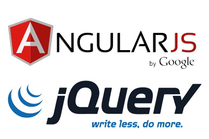

Comparación con la Competencia
- Frameworks similares a AngularJS son Backbone.js y Ember.js
- Backbone.js es ligero (6.5KB), pero no tan completo en funcionalidad.
- Ember.js es el más nuevo de los 3 frameworks, es más completo y pesado (90KB).
- AngularJS es el framework más popular de los 3. Balanceado en cuanto a peso (39.5KB) y funcionalidad.
- Una ventaja adicional de AngularJS es que es altamente compatible con otras librerías JavaScript como jQuery o framewokrs gráficos como Bootstrap.
